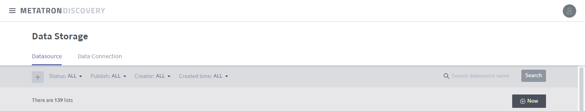
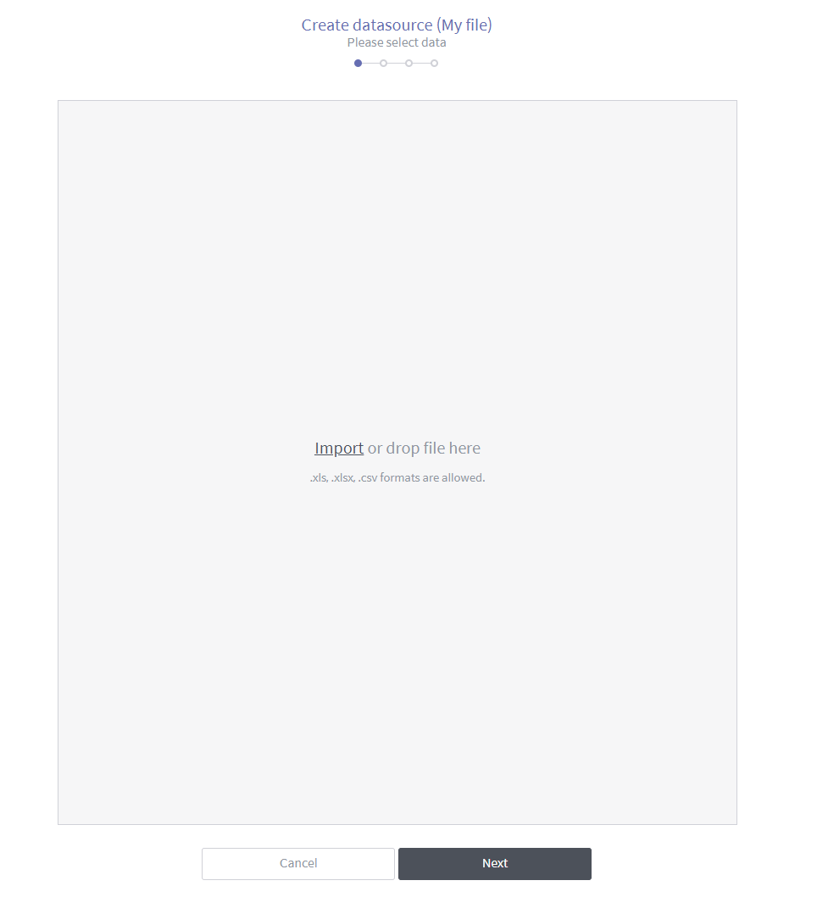
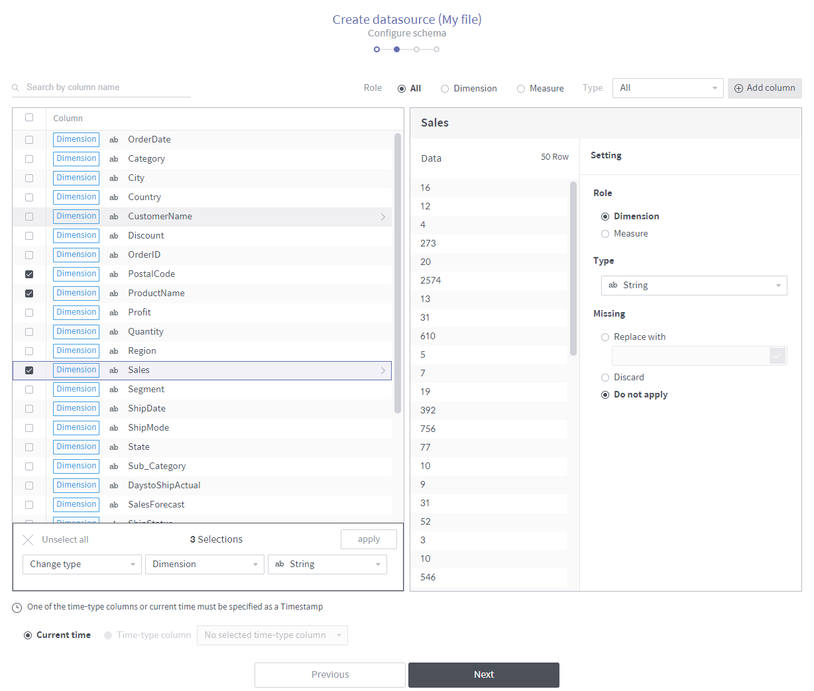
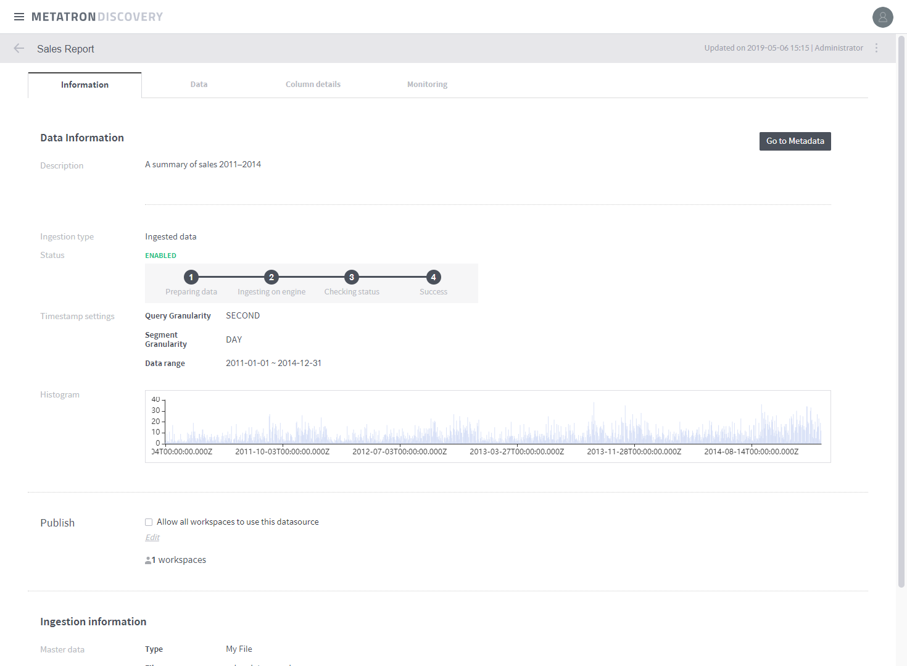
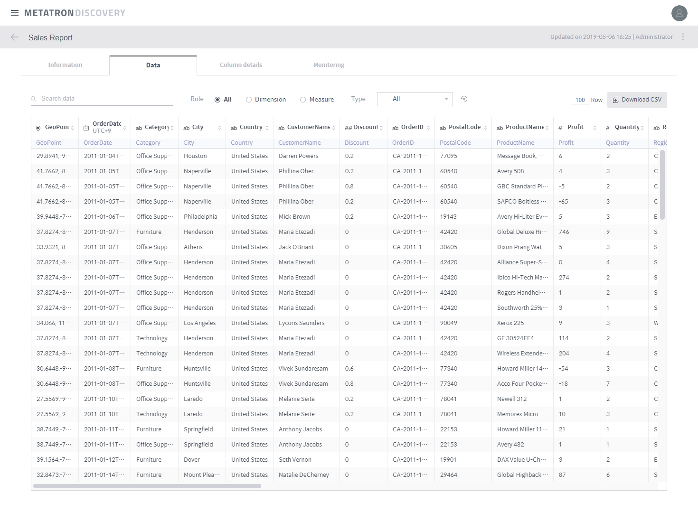
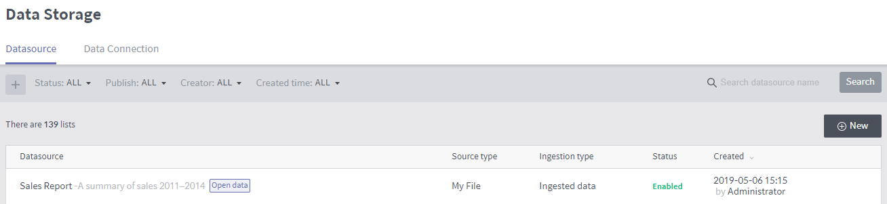
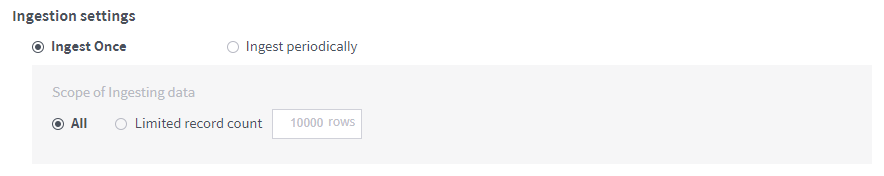
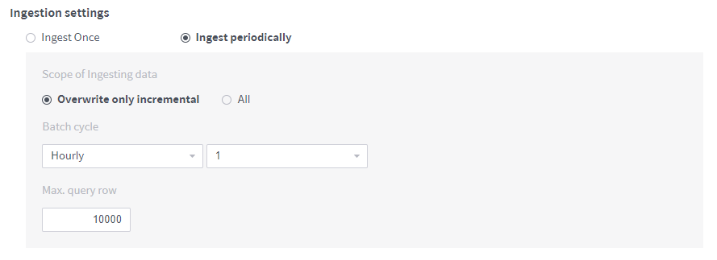
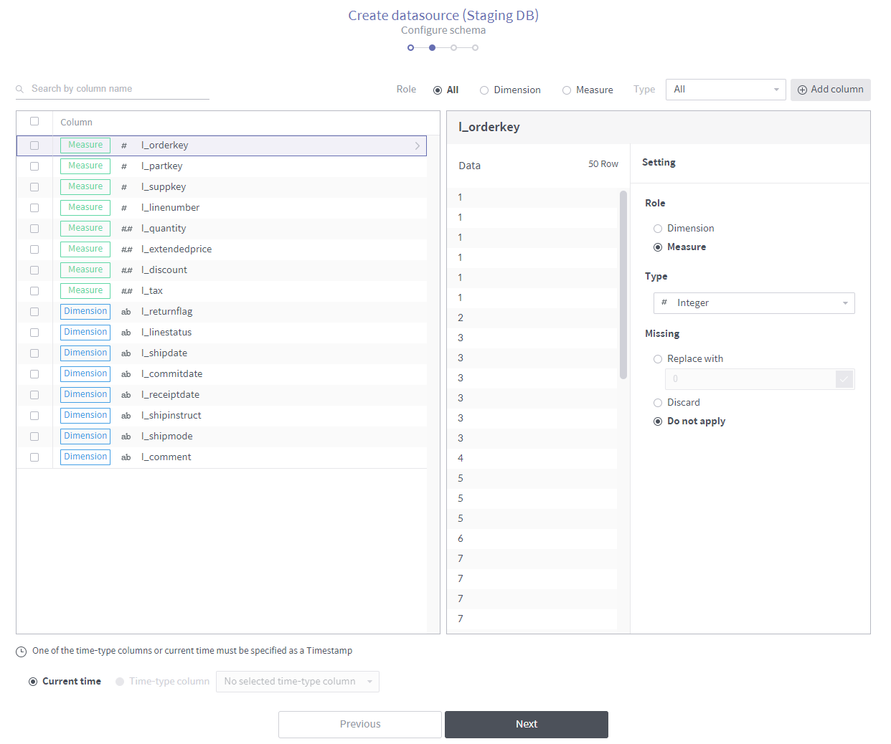
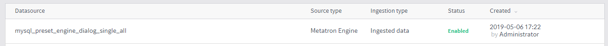

Create a data source¶
This section explains the process of ingesting various types of source data into the Metatron engine and converting them into data sources.
To create a data source, click the + New button at the top right of the Data Source home screen.

Then, select the type of source data.

File: Creates a data source from a file stored on your local PC (for details, refer to Create a data source from a file).
Database: Creates a data source from an external database (for details, refer to Create a data source from a database).
Staging DB: Creates a data source from Metatron’s internal Hive database (for details, refer to Create a data source from a staging database).
Stream: This function is not currently supported.
Data Snapshot: This function is not currently supported.
Metatron Engine: Migrates a data source stored in a previous Metatron version (for details, refer to Add a data source with the Metatron engine).
Create a data source from a file¶
Creates a data source from a file stored on your local PC.
On the source data type selection page, select File.
Select a file to be used as a data source from your local PC. You can either click the Import button and select the file, or drag and drop a file to the box. Once a file is selected, click Next.
From the file, select the sheet to be included in the data source.
Note
If the “No preview data” message is shown in spite of there being data, check whether the Column delimiter and Line Separator have been configured correctly. In this example, the Line Separator must be set to “r”? the carriage return for MS Windows.

File name: Name of the imported file. You can replace it with another file.
File sheet list: Displays the sheets included in the imported file. Select the sheet from which you want to create a data source.
File sheet name: Name of the currently selected sheet.
Size: Size of the imported file.
Column: Number of columns in the imported file.
Row: Displayed number of rows and total number of rows in the imported file. Enter the number of rows to be displayed on the page.
Type: Displays how many data types are recognized from the columns. The data type of each column can be modified later.
Use the first row as the head column: Select the check box to use the first row of the file as column headers. If you don’t select it, a new row is inserted as a column header row.
Configure the schema of the data source.

Search by column header: Searches the imported file for columns by name.
버튼(우측 상단): 선택한 컬럼을 삭제합니다.
Role: Displays all, dimension, or measure columns from the imported file.
Recommended filters: Displays columns to which a top-priority filter is applied.
Type: Filters the columns in the imported file by field type.
Column list section: Lists columns filtered by specified criteria. Once you have selected columns, a panel appears at the bottom of the screen. After selecting your desired batch action in the panel, click Apply to perform the batch action on the selected columns.
Individual column settings section: This area is used to set the attributes of a column selected from the column list. Missing is used to set nulls in the column.
Replace with: Replaces the nulls with the value typed in.
Discard: Discards the nulls.
Do not set: Leaves the nulls as nulls. However, the nulls in the timestamp column are mandatorily discarded.
Timestamp setting: Determines how to timestamp each row. You can either designate an existing time-type column as a timestamp column, or create a new time-type column whose values are all timestamped with the current time.
Note
Metatron Druid is a time-series engine that requires a timestamp for each row when a data source is created.
컬럼 추가: 데이터에 위도, 경도 컬럼이 있는 경우 이를 결합하여
Point타입의 신규 컬럼을 추가할 수 있습니다. 이 컬럼을 지우면 다른 컬럼들과 동일하게 동작합니다.Configure data source ingestion and click Next.

Segment Granularity: In Druid, a data source is stored into multiple segments to be processed over multiple nodes in the distributed cluster environment. This granularity setting defines the time intervals into which the data source is partitioned.
Query Granularity: Defines the minimum time period by which data is queried. This ensures faster returns by aggregating data per granularity interval.
Rollup: “Data rollup” summarizes data based on its dimension (for details on the concept of data rollup, refer to Data roll-up). A summarization rule might be summing up all values in each column or applying a set of expressions such as
profit=sales=expenses.Advanced settings: Configures how to ingest data. Type in the text box in the JSON format. For example,
{maxRowsInMemory : 75000, maxOccupationInMemory : -1, maxShardLength : -2147483648, leaveIntermediate : false, cleanupOnFailure : true, overwriteFiles : false, ignoreInvalidRows : false, assumeTimeSorted : false}Confirm the information about the data set from the imported file, enter the Name and Description, and click Done to create a data source. It may take a few seconds or minutes depending on the amount of data as the source data is ingested into the internal Metatron engine (Druid).

After data ingestion is complete, you can check the status. In the example below, the status is set to ENABLED and a histogram is displayed.
In the Data tab, you can check the ingested data in the form of a table.
On the Data Source management home screen, you will find a newly-created data source. While data is being ingested, the status is displayed as Disabled as shown below; the status changes to Enabled once ingestion is complete. After that, you can use the data source.

Create a data source from a database¶
Creates a data source from an external database.
On the source data type selection page, select Database.
Enter the information to connect the database.

Ingestion type: Select how to ingest data into the data source.
Ingested data: Displays data sources that contain data ingested into the Metatron storage.
Linked data: Displays data sources that load data from linked databases whenever necessary.
Load a data connection: Automatically loads access information for a database that is already registered as a data connection. However, you must verify the connection by clicking the Validation check button.
DB type: Select the type of the database to be connected.
Host: Enter the hostname to connect to the database.
Port: Enter the port to connect to the database.
User name: Enter the username of the database.
Password: Enter the password of the database.
Validation check: Once you fill out all fields, the Test button becomes active. Click on it to verify if the connection is valid: The validity of the connection appears below the button.
Select data. You can either select a table from the connected database, or write a query yourself.

Table: Select a database and a table to display the table’s data. Once the data being ingested has been displayed, confirm the data and click Next.
Query: Write a query to import the data you want, and click Run to display the data in the lower section. Confirm the data and click Next.
The rest of the process is identical to Create a data source from a file. However, when creating a data source from a database, you must configure additional ingestion settings as follows.

Ingest once: Ingest the data currently stored in the database only this once. When selecting the Limited record count, you can specify how many rows are to be ingested from the first row.
Ingest periodically: Saves data on a regular basis.

Create a data source from a staging database¶
Creates a data source from Metatron’s internal Hive database.
On the source data type selection page, select Staging DB.
Once you select the database and its table to connect, the data is displayed.

The rest of the process is identical to Create a data source from a database.

Add a data source with the Metatron engine¶
Migrates a data source stored in a previous Metatron version.
On the source data type selection page, select Metatron Engine.
When data sources created in a previous version of Metatron are listed on the left as shown below, select the check boxes of the data sources you want to migrate to the current version.

Click Done to migrate the selected data sources.
